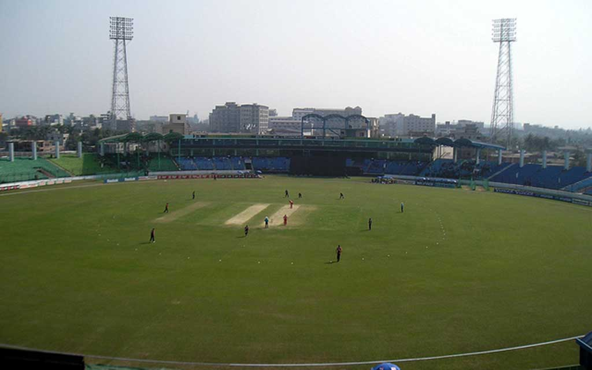
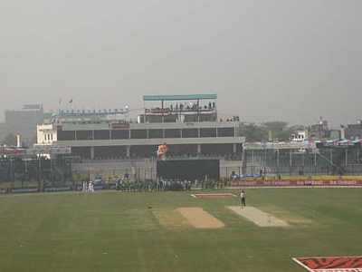

খান সাহেব ওসমান আলী ষ্টেডিয়াম (আন্তর্জাতিক মানের ষ্টেডিয়াম)
ঢাকা-নারায়ণগঞ্জ লিংক রোড সংলগ্ন রামারবাগ এলাকায় অবস্থিত খান সাহেব ওসমান আলী ষ্টেডিয়াম। এটি একটি আন্তর্জাতিক মানের ষ্টেডিয়াম। ২০১১সালে বিশ্বকাপ ক্রিকেট খেলার সময় এখানে কয়েকটি প্রস্তুতি ম্যাচ খেলা হয়েছে। এছাড়া এখানে বিভিন্ন ধরণের দেশী ঘরোয়া ও আন্তর্জাতিক খেলা অনুষ্ঠিত হয়ে থাকে। খোলামেলা পরিবেশে অবস্থিত ষ্টেডিয়ামটি অত্যন্ত সুন্দর ও মনোরম। এর চতুর্পাশে রয়েছে সুবিশাল খোলা জায়গা, যা খেলার দর্শক সহ যে কোন দর্শনার্থীর চোখ জুড়ায়।
ওসমানী পৌর স্টেডিয়াম, নারায়ণগঞ্জ
ওসমানী পৌর স্টেডিয়াম ১৯৬৫ সালে নির্মিত বাংলাদেশের একটি জেলা পর্যায়ের স্টেডিয়াম। স্টেডিয়ামটি নারায়ণগঞ্জ জেলার নারায়ণগঞ্জ সিটি কর্পোরেশনের ১২ নং ওয়ার্ডের ইসদাইর মহল্লায় শের-ই বাংলা রোডের পাশে অবস্থিত। এই স্টেডিয়ামে বাংলাদেশের
জাতীয় দিবস সমূহে কুচকাওয়াচ, জেলার বিভিন্ন ক্রীড়া বিশেষ করে ফুটবল, ক্রিকেট, ভলিবল, হকি, হ্যান্ডবল ও কারাতে এর খেলোয়াড় বাছাই ও প্রশিক্ষণ অনুষ্ঠিত হয় । স্টেডিয়ামটি বাংলাদেশ প্রিমিয়ার লীগ(বিপিএল)-এর ২০০৯-১০ আসরের অন্যতম ভেন্যু।
নারায়ণগঞ্জ জেলার দুইটি স্টেডিয়ামের মধ্যে এটা প্রথমে নির্মিত হয়। অন্য স্টেডিয়ামটি ফতুল্লায় অবস্থিত খান সাহেব ওসমান আলী স্টেডিয়াম। বাংলাদেশের অন্যান্য সকল ক্রীড়া ভেন্যুর মতই এই স্টেডিয়ামটি জাতীয় ক্রীড়া পরিষদের অধিভুক্ত
ও জেলা ক্রীড়া সংস্থার তত্বাবধায়নে রয়েছে।
১৯৬৫ সালে নারায়ণগঞ্জ পৌরসভা খেলার মাঠ হিসেবে এ স্টেডিয়ামের সাড়ে আট একর জায়গা উন্নয়ন করা হয়[১]। স্বাধীনতার পর মাঠটিকে স্টেডিয়াম ঘোষণা দেওয়া হয়। ১৯৭৩ সালে নারায়ণগঞ্জ পৌরসভা স্টেডিয়ামের প্যাভিলিয়ন নির্মাণ করে দেয়।
১৯৭৮ সালে নারায়ণগঞ্জ শহর উন্নয়ন কমিটি মাঠের পশ্চিম পাশে গ্যালারি নির্মাণ করে, যা এখনো আছে। ১৯৮৬ সালে এটি দেখভালের দায়িত্ব হস্তান্তর করা হয় জেলা ক্রীড়া সংস্থার কাছে।